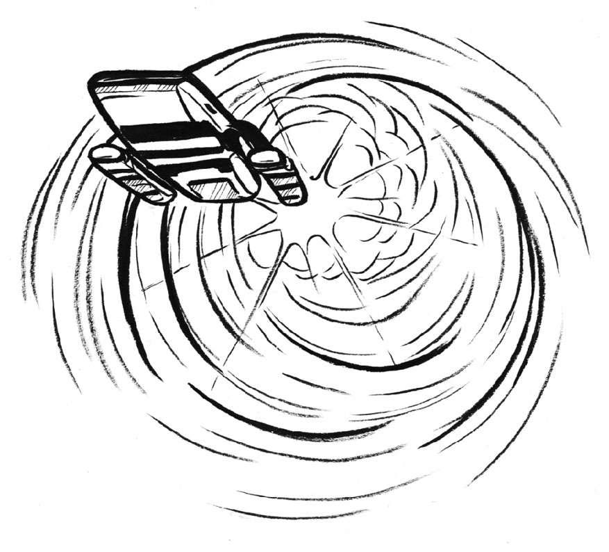

上一章我们提到了虫洞，就是时间和空间中隐藏的小裂缝，一个可以通往其他年代和地方的通道或捷径。虫洞最基本的概念是时空中两点之间的桥梁。根据史蒂芬·霍金的理论，虫洞数量很多，只是太小，我们还没有找到。

虫洞经常出现在科幻作品中，因为星际穿越者可以借助它们在人类的时间尺度内旅行。进入虫洞可以将时空旅行时间缩短上千年。受人尊敬的天体物理学家、宇航员兼作家卡尔·萨根（Carl Sagan）曾在他的小说《接触》（Contact ）中使用虫洞作为交通工具，将一群人送达银河中心。亚瑟·查理斯·克拉克（Arthur C. Clarke）和斯蒂芬·巴克斯特（Stephen Baxter）合著的小说《昔日的光辉》（The Light of Other Days ）中的人物使用虫洞作为超光速通信工具。《星际迷航》（Star Trek ）系列中的现代船员们也经常跌入虫洞。